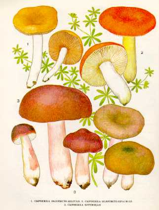

1. СЫРОЕЖКА ЗОЛОТИСТО-ЖЕЛТАЯ.
Местообитание — широколиственные, реже хвойные
леса. Растет небольшими группами с июля по октябрь.
Шляпка 2—5 см в диаметре, золотисто-желтая, по
краю розоватая, клейкая, при высыхании блестящая. Кожица легко снимается со шляпки.
Мякоть рыхлая, белая, сладковатая, с приятным
фруктовым запахом.
Пластинки свободные, сначала кремово-желтые, затем
охряножелтые, с перемычками. Споровый порошок охряно-желтый. Споры сферические, шиповатые.
Ножка до
Гриб съедобен, четвертой категории. Употребляется свежим.
2. СЫРОЕЖКА ЗОЛОТИСТО-КРАСНАЯ.
Встречается в лиственных и хвойных лесах. Растет
одиночно и небольшими группами с июля по сентябрь.
Шляпка до
Мякоть белая, под кожицей ярко-желтая, на вкус
пресная, без запаха.
Пластинки приросшие к ножке, бледно-охристые, с желтым краем. Споровый
порошок желтый. Споры бородавчатые.
Ножка до
Гриб съедобен, третьей категории. Употребляется свежим и соленым.
Сыроежку золотисто-красную
можно спутать с ядовитым грибом мухомором красным !!!
3. СЫРОЕЖКА БУРЕЮЩАЯ.
Растет в различных лесах в июле - сентябре.
Шляпка до
Пластинки приросшие или свободные, у молодых белые, с возрастом буреющие, частые. Споровый порошок бледно-охряный.
Ножка до
Съедобен, третьей категории. Употребляется вареным, соленым и маринованным.